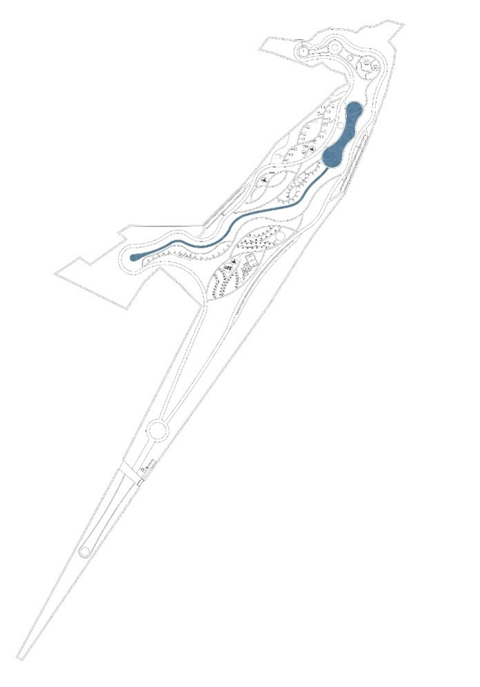
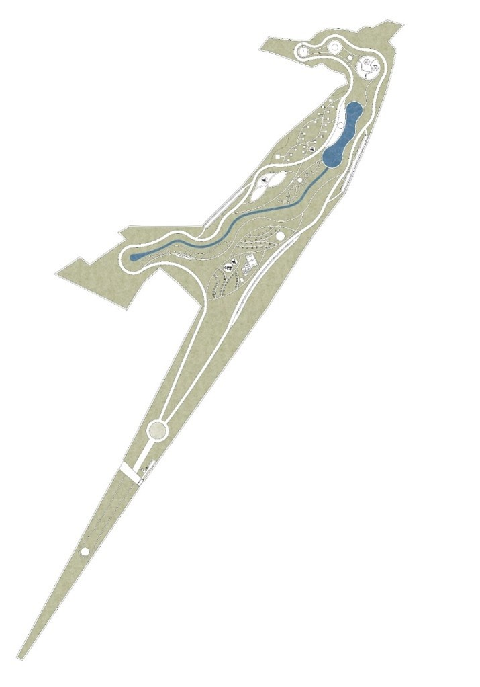
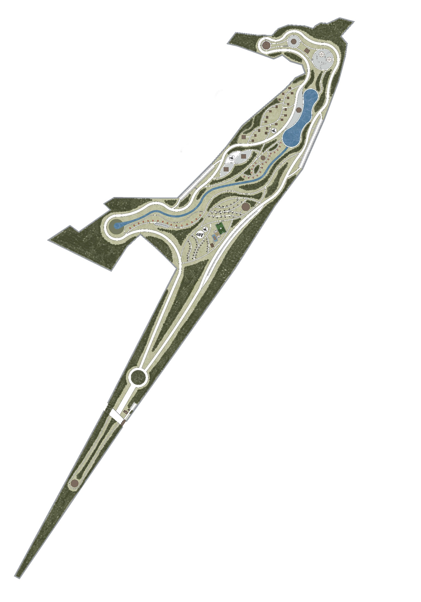

Planlamanın Amacı
Atatürk Üniversitesi’nin mülkiyetinde bulunan Tortum Gölü bitişindeki toplam 74 ha.’lık alanda; mevcut doğal karakterleri korurken, yapısal ve bitkisel objeleri doğal yapıyla bir bütün oluşturacak şekilde kullanarak, ziyaretçilere doğal ama aynı zamanda işlevsel bir konaklamalı Orman Parkı alanı düzenlemek palanın amacı olarak belirlenmiştir.
Coğrafi Konum
Alanımız Türkiye Erzurum İli’ne bağlı Uzundere İlçesinde il merkezine 84km mesafededir. Uzundere İlçesi coğrafi konumu itibariyle Erzurum–Artvin Karayolu üzerinde yer almaktadır.

Alan Görüntüleri

Alan Lekesi
Alan planlamasında, coğrafi özellikler dikkate alınarak adrenalin sporları kuzeydeki iki dağ arasında konumlandırılmış, gözlem kulesi ise Tortum Gölü’ne ve kuş göç yoluna hakim bir noktaya yerleştirilmiştir. Çeşitli konaklama türleri, su yüzeyine bakacak şekilde tasarlanarak hem doğayla uyum sağlanmış hem de ziyaretçilere keyifli bir deneyim sunulmuştur.

Gelişme
Tortum Gölü Havzası Kırsal Peyzaj Planlaması’da farklı planlara ihtiyaç olduğu gözlemlenmektedir. Bu amaçla yeni bir planlama anlayışıyla olaya yaklaşmak, doğal çevreyi koruyan bir kapasiteyle bu özel bölgenin planlaması gerekmektedir. Bu nedenle alan tahribatını engellemek için kişi sayısı minimum tutulmuştur.
 Plantasyon
Erzurum Orman Parkı'nda yapılan bitkilendirme çalışmaları, bölgenin iklimine dayanıklı ve doğal ekosisteme uyumlu türlerle gerçekleştirilmiştir. Yerel bitki türleri ön planda tutularak alanın doğal dokusu korunmuş ve bölgeye estetik bir görünüm kazandırılmıştır.
Alandan Kesitler
Tasarımın farklı kotlardaki ilişkilerini ve alanın topografya ile uyumunu anlamak için kritik öneme sahiptir. Bu kesitler, hem görsel estetik hem de işlevsellik açısından tasarımın detaylarını doğru bir şekilde ortaya koyar.

3D Görüntüler